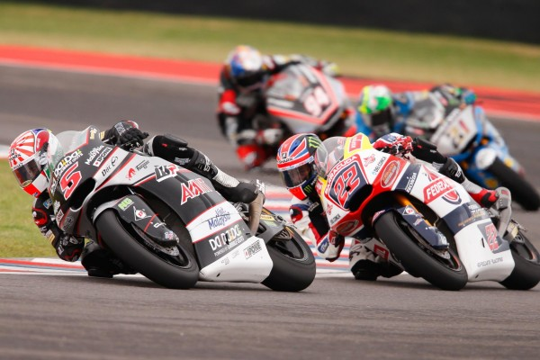

The 125 cc class was replaced in 2012 by the Moto3 class. This class is restricted to single-cylinder 250 cc four-stroke engines. Riders in the Moto3 class cannot be older than 28 years, or 25 years for new contracted riders participating for the first time and wild-cards.

Moto2 is the 600 cc four-stroke class, launched in 2010 to replace the traditional 250 cc two-stroke class. Engines are supplied exclusively by Honda, tyres by Dunlop and electronics are limited and supplied only by FIM sanctioned producers with a maximum cost set at 650 EUR.